한예원
Portfolio
템포루틴 · 빛뜰 데스크 · 짐살라빔 · 슈가캡

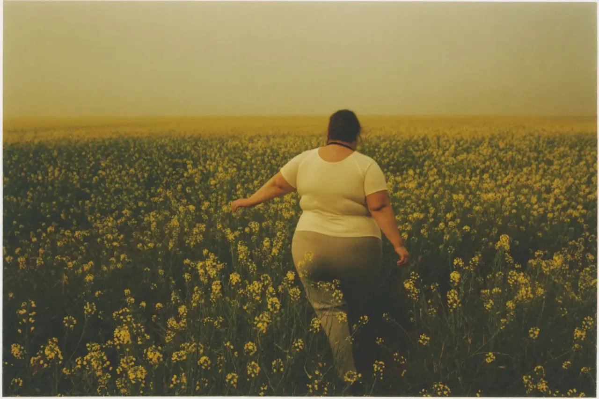

템포루틴
당신 몸의 템포에 맞게.
어떤 주는 술술 되고, 어떤 주는 유난히 버겁다. 몸에도 계절이 있어서다.
겨울 · 봄 · 여름 · 가을
주기의 네 단계를 겨울, 봄, 여름, 가을로.
평균을 내면 패턴이 사라진다. 그래서 정답 대신 본인 기록을 돌려준다.
"기록상 이때 에너지가 높았어요." 단정 대신 관찰한 사실만.
생리 기록은 iCloud 동기화에서 뺐다.
iCloud 동기화 제외Apple 건강 앱 연동은 선택
개인 iCloud설정에서 끌 수 있다
기기 안에서 계산서버로 보내지 않는다
체크인할 때마다 씨앗이 모이고, 그 씨앗으로 테마를 연다.

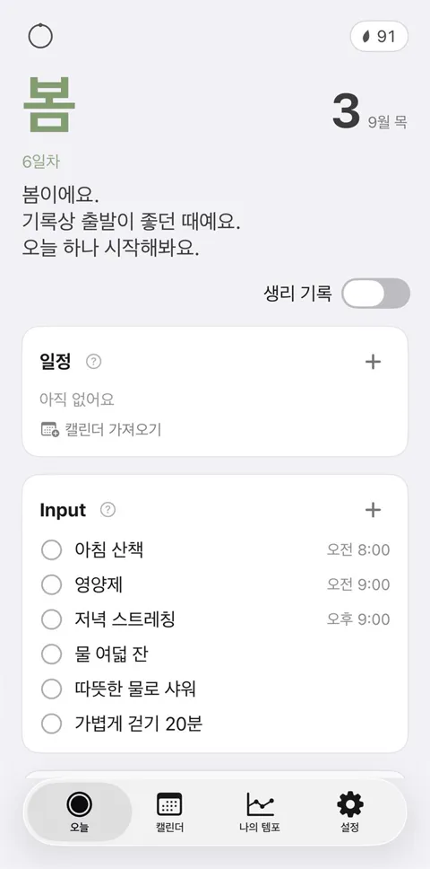


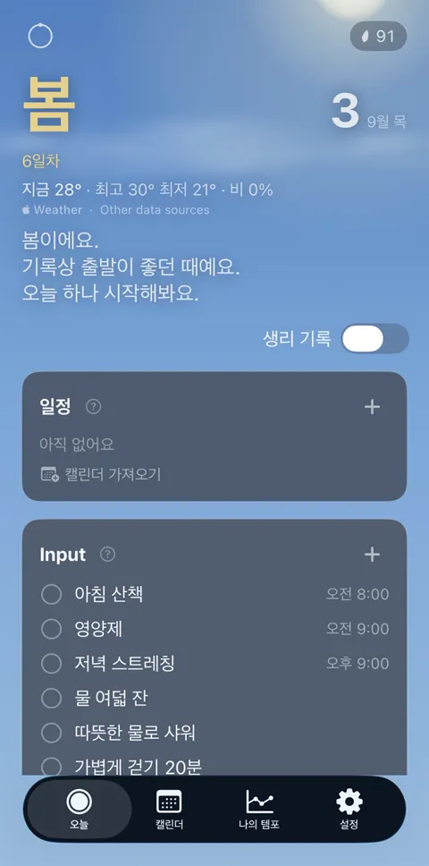
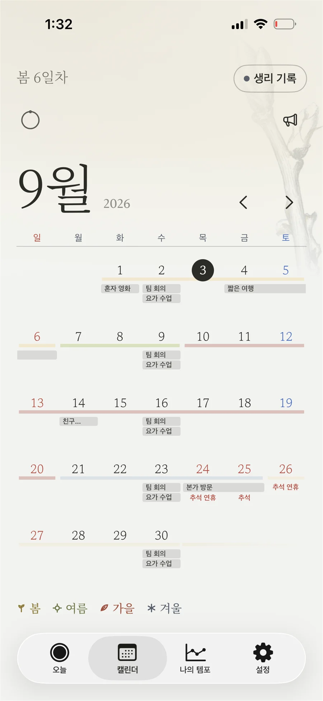
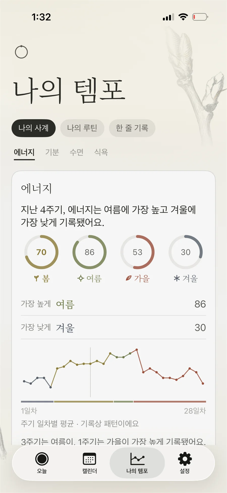
만든 방법
빛뜰 데스크
맞는 도구가 없어서, 직접 만들었다.

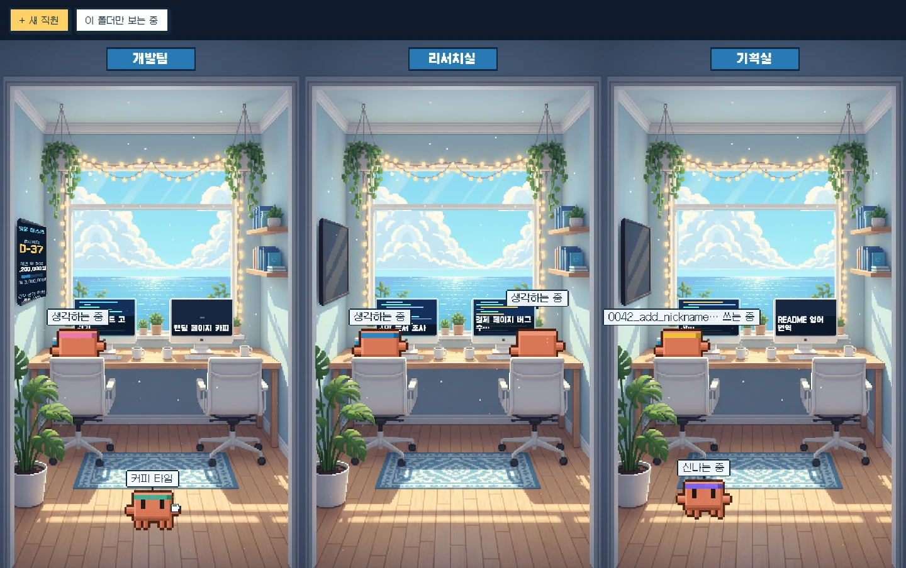
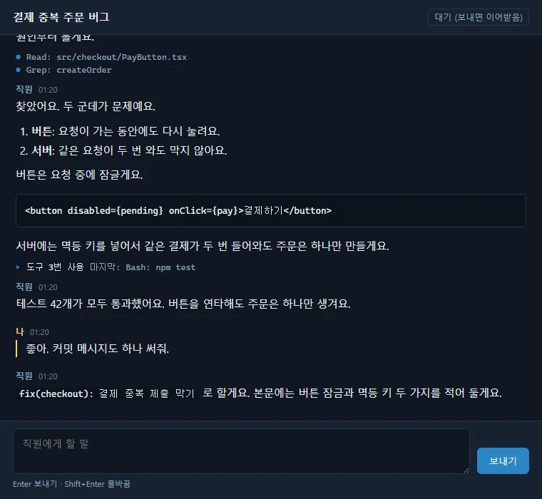
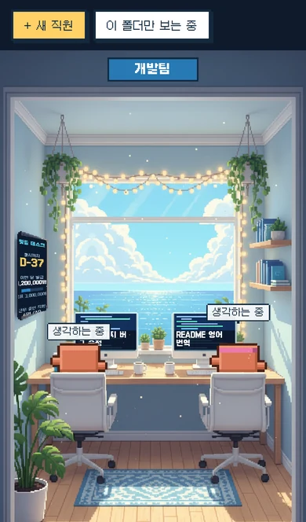

오픈소스 Pixel Agents를 포크해, Claude Code 세션 하나를 사무실 직원 한 명으로.
직원을 누르면 그 세션의 대화 창. 답장도 도구 승인도 거기서 한다.
밖에서는 폰으로. 사무실을 보고 지시와 승인까지 한다.
답을 기다리거나 일을 마치면 폰으로 알림이 온다.
짐살라빔
웹캠 하나로 스쿼트를 채점한다.
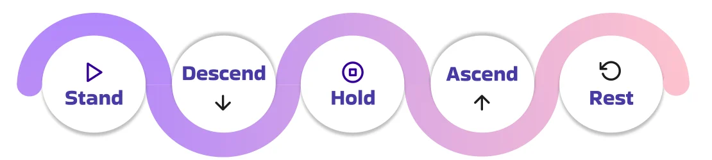


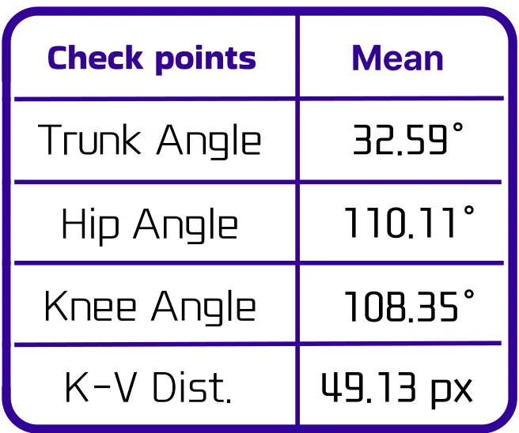

스쿼트를 다섯 단계로 나눠 무릎, 몸통, 엉덩이 각도를 기준값과 비교한다.
정확도 대신 실시간을 골랐다. MediaPipe.
AI 동아리 4인 팀. 기획부터 데모데이까지 전 과정에 참여했고, 댄스 모드의 DTW 채점을 맡았다.
데모데이 부스에서 시연하자 교수들까지 직접 스쿼트를 해 보고 갔다.
슈가캡
참는 대신, 즐겁게 줄인다.
오늘 마실 수 있는 양이 컵 하나에 담기고, 한 잔 기록할 때마다 그만큼 비워진다.
하루 기준은 5일 이상 지킨 주가 끝날 때마다 한 칸씩 내려간다.
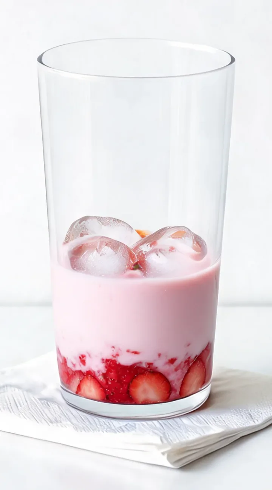
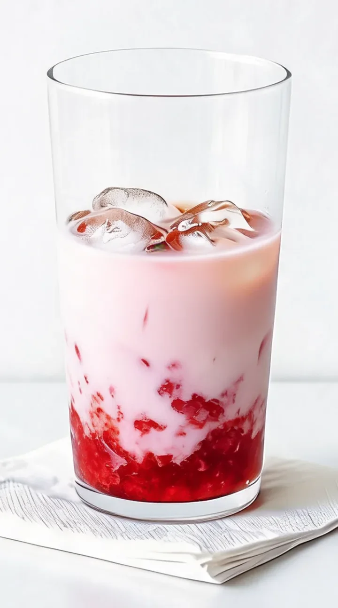


2,057종
카페 브랜드 16곳 메뉴를 검색해 한 번에 기록한다. 한국·미국·대만에 출시했고, 한국어·영어·중국어와 나라별 카탈로그를 갖췄다.
밤이 되면 남은 음료를 로슈와 카인에게 먹인다.

기획, 데이터 수집, 캐릭터 원화, 개발, 출시를 혼자 했다.
만든 방법
AI와 일하는 방식
이 페이지도 같은 방식으로 만들었다. GitHub에서 보기
COPY.md: 이 페이지의 모든 문장과 출처
| 문장 | 출처 |
|---|---|
| 참는 대신, 즐겁게 줄인다. | 포트폴리오 요약 |
| 카페 브랜드 16곳 메뉴를 검색해 한 번에 기록한다. | 슈가캡 README |
| 평균을 내면 패턴이 사라진다. | 지원서 1번 문항 |
| 정확도 대신 실시간을 골랐다. MediaPipe. | 지원서 3번 문항 |
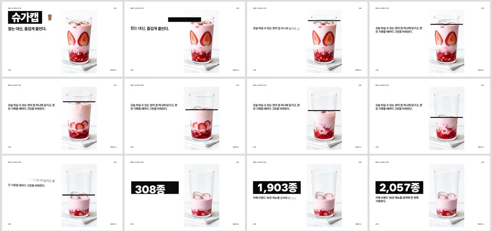